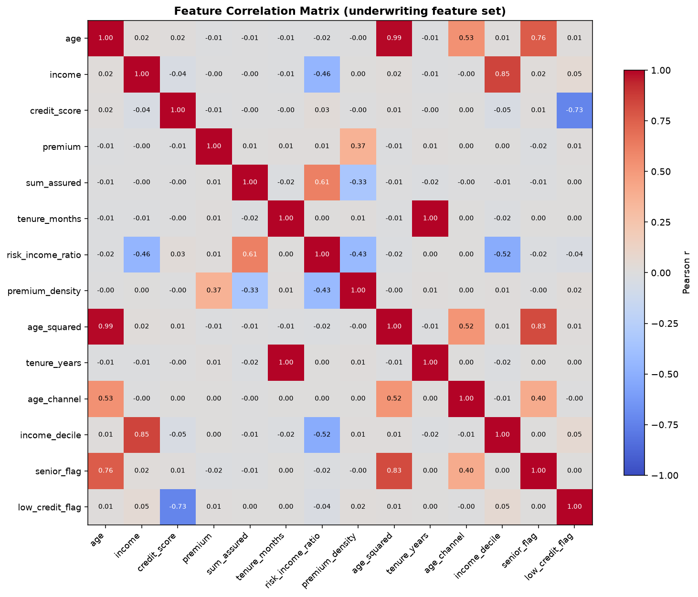

Session 12: AI for Underwriting
Learning Objectives
- Design a feature engineering pipeline that transforms raw policyholder data into predictive underwriting features using encoding, scaling, and feature selection techniques
- Build a risk scoring model using Random Forest that produces a 0–1000 risk score for each policyholder
- Map risk scores to premium adjustments and create an automated underwriting recommendation engine
- Apply SHAP values and feature importance plots to explain model predictions to regulators and underwriters
- Design an end-to-end underwriting automation workflow with clear rules for accept/refer/reject decisions
1. Underwriting: From Art to Science
Underwriting is the process of evaluating risk and deciding whether to accept it, at what price, and on what terms. For most of insurance history, underwriting was an art — a senior underwriter in a room, reviewing paper applications, applying experience-based rules, and making subjective judgments. The problem was not that this was inefficient (though it was). The problem was that it was inconsistent — two equally qualified underwriters reviewing the same application could reach different decisions, and the same underwriter could make different decisions at 9 AM and 4 PM.
AI-driven underwriting replaces subjective judgment with consistent, data-driven risk assessment. It does not eliminate the underwriter — it eliminates the inconsistency. The underwriter's role shifts from making individual risk decisions to: (a) setting the risk appetite and pricing framework within which the AI operates, (b) handling the complex referrals the AI flags, (c) monitoring the AI's decisions for drift and fairness, and (d) improving the models over time.
1.1 Traditional vs. AI Underwriting
| Dimension | Traditional Underwriting | AI-Driven Underwriting |
|---|---|---|
| Risk assessment method | Rule-based guidelines, manual judgment, experience-based heuristics | Statistical model using historical claims data and thousands of feature interactions |
| Decision speed | Hours to days (review, refer, escalate) | Seconds to minutes (automated for 70–90% of standard cases) |
| Consistency | Low to moderate — varies by individual underwriter, time of day, workload | High — same features always produce the same risk score |
| Data used | Application form data (limited, self-reported) | Application data + external data (credit bureau, vehicle registration, medical databases, property records, Account Aggregator) |
| Feature interactions | Manual — underwriter checks a few combinations (e.g., "age + vehicle type") | Automatic — model considers hundreds of interactions simultaneously |
| Pricing accuracy | Broad risk bands — good risks pay slightly more, bad risks pay slightly less | Granular risk segmentation — each policyholder pays closer to their true risk |
| STP (Straight-Through Processing) | 5–20% (only the simplest cases auto-accepted) | 60–90% (all but the most complex or borderline cases auto-accepted) |
| Regulatory challenge | Easier to defend — "the underwriter used their professional judgment" | Harder to defend — "explain how the model decided that this applicant is risky" |
2. Feature Engineering for Underwriting
Feature engineering is the process of transforming raw data into inputs that a machine learning model can use effectively. In underwriting, this means taking the application data, internal records, and external data sources and creating predictive features. The quality of feature engineering determines more about model performance than the choice of algorithm — a well-engineered dataset with a simple model often outperforms a poorly-engineered dataset with a complex one.
2.1 Feature Types in Underwriting
import pandas as pd
import numpy as np
from sklearn.model_selection import train_test_split
from sklearn.preprocessing import StandardScaler, OneHotEncoder, LabelEncoder
from sklearn.compose import ColumnTransformer
from sklearn.pipeline import Pipeline
from sklearn.ensemble import RandomForestClassifier
from sklearn.metrics import roc_auc_score, classification_report, confusion_matrix
import matplotlib.pyplot as plt
# Load the policy-level dataset (one row per policy, INCLUDING no-claim policies)
df = pd.read_csv('insurance_policy_cleaned.csv')
# Build the underwriting view: application + policy attributes, plus the claim outcome
dataset = df.copy()
dataset['claim_amount'] = df['total_claim_amount'] # total claimed on this policy
dataset['days_since_purchase'] = (pd.Timestamp.today()
- pd.to_datetime(df['start_date'])).dt.days
print(f"Policy-level dataset: {dataset.shape[0]:,} rows, {dataset.shape[1]:,} columns")
print(f"\nClaim rate: {dataset['has_claim'].mean()*100:.1f}%")
print(f"Columns available for feature engineering:\n{dataset.columns.tolist()}")insurance_cleaned.csv (one row per claim) up to policies with groupby('policy_id'). Don't — that file contains only policies that filed claims, so the derived has_claim flag would be 1 for every single row (claim rate 100%) and the model would have nothing to learn. Underwriting data must be policy-level: one row per policy, including the policies that never claimed — those quiet rows are exactly what a risk model learns from. This is the same class of data trap as Session 11's premium-aggregation warning.
Lab output — your run prints exactly this (fixed-seed data):
Policy-level dataset: 10,000 rows, 22 columns
Claim rate: 44.2%
Columns available for feature engineering:
['policy_id', 'customer_id', 'policy_type', 'premium', 'sum_assured', 'tenure_months', 'start_date', 'end_date', 'channel', 'product_name', 'n_claims', 'total_claim_amount', 'has_claim', 'age', 'gender', 'location', 'occupation', 'income', 'credit_score', 'kyc_status', 'claim_amount', 'days_since_purchase']How to read it: 10,000 rows means one row per policy — the correct unit, because underwriting accepts or rejects a policy, not a claim. The claim rate of 44.2% is the base rate: any model we build must do better than blindly guessing "will claim" 44% of the time (Section 3 measures this properly with AUC). The 22 columns are the raw material: application facts (age, gender, location, occupation, income, credit_score), policy terms (premium, sum_assured, tenure, channel, product), and the outcome columns (has_claim — the target; claim_amount, days_since_purchase — derived). Everything from here on is about transforming these raw columns into features that capture underwriting judgment.
2.2 Creating Underwriting Features
Raw columns describe what the customer applied for; underwriting features describe what the underwriter worries about. This pipeline turns ten raw fields into nine engineered features, each encoding one piece of underwriter judgment: affordability stress (how much cover relative to income), price-of-cover density, the non-linear ageing of risk, credit quality bands, exposure duration, channel-mix effects, relative wealth, and two hard flags (senior, low credit). Run it on the dataset built in §2.1 — the verification table at the end confirms each feature was actually created and shows its shape.
# === FEATURE ENGINEERING PIPELINE ===
# 1. Risk-to-Income Ratio (captures affordability stress)
dataset['risk_income_ratio'] = (
dataset['sum_assured'] / (dataset['income'] + 1)
)
# Cap extreme values
dataset['risk_income_ratio'] = dataset['risk_income_ratio'].clip(upper=100)
# 2. Premium Density (premium per unit of sum assured)
dataset['premium_density'] = (
dataset['premium'] / (dataset['sum_assured'] + 1)
)
# 3. Age squared (non-linear age effect — claim risk often increases faster than linearly)
dataset['age_squared'] = dataset['age'] ** 2
# 4. Credit score category (binned version)
dataset['credit_tier'] = pd.cut(
dataset['credit_score'],
bins=[0, 600, 700, 800, 900],
labels=['Low (<600)', 'Fair (600-699)', 'Good (700-799)', 'Excellent (800+)']
)
# 5. Policy tenure in years (from tenure_months)
dataset['tenure_years'] = dataset['tenure_months'] / 12
# 6. Age × Channel interaction (certain channels attract different risk profiles)
dataset['age_channel'] = dataset['age'] * (
dataset['channel'].map({'Online': 1, 'Agent': 2, 'Aggregator': 3, 'Bancassurance': 4, 'Partnership': 5})
.fillna(0)
)
# 7. Income decile (within the portfolio)
dataset['income_decile'] = pd.qcut(
dataset['income'], q=10, labels=False, duplicates='drop'
)
# 8. Senior citizen flag (biologically significant risk factor)
dataset['senior_flag'] = (dataset['age'] >= 60).astype(int)
# 9. Low credit flag
dataset['low_credit_flag'] = (dataset['credit_score'] < 650).astype(int)
# Verify new features
new_features = ['risk_income_ratio', 'premium_density', 'age_squared',
'credit_tier', 'tenure_years', 'age_channel',
'income_decile', 'senior_flag', 'low_credit_flag']
print("New features created:")
for feat in new_features:
if feat in dataset.columns:
print(f" ✓ {feat:25s} — dtype: {str(dataset[feat].dtype):10s}, "
f"unique: {dataset[feat].nunique()}, missing: {dataset[feat].isna().sum()}")
else:
print(f" ✗ {feat:25s} — NOT FOUND")Lab output — your run prints exactly this (fixed-seed data):
New features created:
✓ risk_income_ratio — dtype: float64 , unique: 7625, missing: 472
✓ premium_density — dtype: float64 , unique: 10000, missing: 0
✓ age_squared — dtype: int64 , unique: 57, missing: 0
✓ credit_tier — dtype: category , unique: 4, missing: 0
✓ tenure_years — dtype: float64 , unique: 59, missing: 0
✓ age_channel — dtype: int64 , unique: 201, missing: 0
✓ income_decile — dtype: float64 , unique: 10, missing: 472
✓ senior_flag — dtype: int64 , unique: 2, missing: 0
✓ low_credit_flag — dtype: int64 , unique: 2, missing: 0How to read it: every line is a sanity check on one engineered feature — dtype (numeric, categorical, or flag), how many distinct values it takes, and how many rows it could not be computed for. Three patterns matter. (1) The two income-derived features (risk_income_ratio, income_decile) each carry 472 missing values — inherited directly from the ~4.7% of customers with missing income; those rows must be imputed or excluded before modeling, and §3's pipeline handles them. (2) The two flags show exactly unique: 2 (0/1) and credit_tier exactly 4 — the shapes we designed, confirming the binning and thresholds behaved. (3) age_squared mirrors age's 57 unique values and tenure_years mirrors tenure_months' 59 — an early hint, before any correlation check, that these two are near-copies of features we already have. That hint becomes §2.3's job.
2.3 Feature Selection
Not all features are worth including. Features with: (a) too many missing values, (b) near-zero variance (almost same value for every observation), or (c) correlations > 0.9 with another feature (multicollinearity) should be reviewed before modeling. Feature selection balances predictive power against model complexity and explainability.
# Check for highly correlated features
numeric_features_for_uw = ['age', 'income', 'credit_score', 'premium',
'sum_assured', 'tenure_months', 'risk_income_ratio',
'premium_density', 'age_squared', 'tenure_years',
'age_channel', 'income_decile', 'senior_flag',
'low_credit_flag']
numeric_features_for_uw = [c for c in numeric_features_for_uw if c in dataset.columns]
corr_matrix = dataset[numeric_features_for_uw].corr()
# Find high-correlation pairs
high_corr_pairs = []
for i in range(len(corr_matrix.columns)):
for j in range(i + 1, len(corr_matrix.columns)):
if abs(corr_matrix.iloc[i, j]) > 0.85:
high_corr_pairs.append((corr_matrix.columns[i], corr_matrix.columns[j],
corr_matrix.iloc[i, j]))
if high_corr_pairs:
print("⚠ HIGH CORRELATION DETECTED (|r| > 0.85) — consider removing one of each pair:")
for v1, v2, corr in high_corr_pairs:
print(f" {v1:20s} ↔ {v2:20s} r = {corr:.3f}")
else:
print("✓ No highly correlated feature pairs detected")
# Separate features and target
feature_cols = (numeric_features_for_uw +
['policy_type', 'channel', 'gender', 'occupation', 'credit_tier'])
feature_cols = [c for c in feature_cols if c in dataset.columns]
X = dataset[feature_cols].copy()
y = dataset['has_claim']
print(f"\nFinal feature set: {X.shape[1]} features ({X.shape[0]:,} observations)")
print(f"Categorical: {X.select_dtypes(include=['object', 'category']).columns.tolist()}")
print(f"Numerical: {X.select_dtypes(include=[np.number]).columns.tolist()}")
# Visualising the correlation matrix as a heatmap
fig, ax = plt.subplots(figsize=(11, 9))
im = ax.imshow(corr_matrix.values, cmap='coolwarm', vmin=-1, vmax=1)
ax.set_xticks(range(len(corr_matrix.columns)))
ax.set_yticks(range(len(corr_matrix.columns)))
ax.set_xticklabels(corr_matrix.columns, rotation=45, ha='right', fontsize=9)
ax.set_yticklabels(corr_matrix.columns, fontsize=9)
for i in range(len(corr_matrix.columns)):
for j in range(len(corr_matrix.columns)):
ax.text(j, i, f"{corr_matrix.iloc[i, j]:.2f}", ha='center', va='center', fontsize=7,
color='white' if abs(corr_matrix.iloc[i, j]) > 0.6 else 'black')
ax.set_title('Feature Correlation Matrix (underwriting feature set)', fontweight='bold')
fig.colorbar(im, shrink=0.8, label='Pearson r')
plt.tight_layout()
plt.show()Lab output — your run prints exactly this (fixed-seed data):
⚠ HIGH CORRELATION DETECTED (|r| > 0.85) — consider removing one of each pair:
age ↔ age_squared r = 0.987
income ↔ income_decile r = 0.851
tenure_months ↔ tenure_years r = 1.000
Final feature set: 19 features (10,000 observations)
Categorical: ['policy_type', 'channel', 'gender', 'occupation', 'credit_tier']
Numerical: ['age', 'income', 'credit_score', 'premium', 'sum_assured', 'tenure_months', 'risk_income_ratio', 'premium_density', 'age_squared', 'tenure_years', 'age_channel', 'income_decile', 'senior_flag', 'low_credit_flag']
tenure_months ↔ tenure_years (r = 1.00: a pure rescale of the same measurement, zero new information), age ↔ age_squared (r = 0.99), and income ↔ income_decile (r = 0.85: binning income adds no information income doesn't already carry). Everything else is pale: premium ↔ sum_assured is near zero (r = 0.01 — they are genuinely different dimensions of the risk), premium_density overlaps only mildly with premium (r = 0.37 — mostly new information), and risk_income_ratio correlates 0.61 with sum_assured — related, but below the action threshold. The blue cells (credit_score ↔ low_credit_flag at −0.73, age ↔ senior_flag at 0.76) are mechanical by construction but stay under 0.85. How to use it: this heatmap is your redundancy map — a hot cell means the same information entered twice, which destabilises coefficient estimates, splits feature importance between twins, and forces the awkward regulator question "why does your model price the same fact twice?" The decision it supports: from each hot pair keep the raw, explainable version — tenure_months, age, income — and drop the derived duplicates tenure_years, age_squared, income_decile.The objective, achieved: feature selection exists to hand Section 3 a lean, non-redundant, explainable feature set. The check did exactly its job: it caught the three redundant features we deliberately created as functions of raw columns, while confirming the engineered ratios and flags carry genuinely new signal. Dropping the three duplicates takes the set from 19 to 16 features (5 categorical + 11 numeric) — every one now answers a distinct underwriting question, and no two tell the model the same story twice. That 16-feature set is what the risk-scoring model in Section 3 trains on.
3. Building a Risk Scoring Model
A risk score is a single number (typically 0–1000) that represents the estimated risk of a policyholder filing a claim. The score is derived from the predicted probability from a classification model, scaled to a more interpretable range. Higher score = higher risk. The business use: a risk score of 200 means "low risk" (accept and possibly discount), 500 means "standard risk" (accept at standard terms), and 800 means "high risk" (load premium, add restrictions, or refer).
3.1 Training a Random Forest Classifier
# Identify categorical and numeric columns
cat_cols = X.select_dtypes(include=['object', 'category']).columns.tolist()
num_cols = X.select_dtypes(include=[np.number]).columns.tolist()
# Splitting the dataset into the Training set and Test set
from sklearn.model_selection import train_test_split
X_train, X_test, y_train, y_test = train_test_split(X, y, test_size = 0.2, random_state = 0, stratify = y)
# Encoding categorical data
from sklearn.compose import ColumnTransformer
from sklearn.preprocessing import OneHotEncoder
ct = ColumnTransformer(transformers=[('encoder', OneHotEncoder(drop='first', handle_unknown='ignore'), cat_cols)], remainder='passthrough')
X_train = np.array(ct.fit_transform(X_train))
X_test = np.array(ct.transform(X_test))
# Feature Scaling
from sklearn.preprocessing import StandardScaler
sc = StandardScaler()
X_train = sc.fit_transform(X_train)
X_test = sc.transform(X_test)
# Training the Random Forest model on the Training set
from sklearn.ensemble import RandomForestClassifier
classifier = RandomForestClassifier(n_estimators = 200, max_depth = 10, min_samples_leaf = 20, class_weight = 'balanced', random_state = 0, n_jobs = -1)
classifier.fit(X_train, y_train)
# Predicting the Test set results
y_pred = classifier.predict(X_test)
y_prob = classifier.predict_proba(X_test)[:, 1]
# Evaluating the model
from sklearn.metrics import roc_auc_score, confusion_matrix, accuracy_score
cm = confusion_matrix(y_test, y_pred)
print(cm)
print(accuracy_score(y_test, y_pred))
auc = roc_auc_score(y_test, y_prob)
print(f"Model ROC-AUC: {auc:.3f}")
print(f"Interpretation: The model can distinguish claim-filers from non-claim-filers")
print(f"{auc*100:.1f}% of the time — this is {'strong' if auc > 0.8 else 'moderate' if auc > 0.7 else 'moderate-to-weak'} discriminatory power.")3.2 Converting Probabilities to Risk Scores
# Predict probabilities for ALL policies (not just test set)
X_all = sc.transform(np.array(ct.transform(X)))
all_prob = classifier.predict_proba(X_all)[:, 1]
# Scale to 0–1000 risk score
dataset['risk_score'] = (all_prob * 1000).astype(int)
# Define risk tiers
dataset['risk_tier'] = pd.cut(
dataset['risk_score'],
bins=[0, 200, 400, 600, 800, 1000],
labels=['Very Low', 'Low', 'Moderate', 'High', 'Very High'],
right=False
)
# Examine risk score distribution
print("Risk Score Distribution:")
print(f" Min: {dataset['risk_score'].min()}")
print(f" 25th pct: {dataset['risk_score'].quantile(0.25):.0f}")
print(f" Median: {dataset['risk_score'].median():.0f}")
print(f" 75th pct: {dataset['risk_score'].quantile(0.75):.0f}")
print(f" Max: {dataset['risk_score'].max()}")
print(f"\nRisk Tier Breakdown:")
print(dataset['risk_tier'].value_counts().sort_index())
# Validate risk tiers against actual claim rates
tier_validation = dataset.groupby('risk_tier', observed=False).agg(
count=('risk_tier', 'size'),
actual_claim_rate=('has_claim', 'mean'),
avg_risk_score=('risk_score', 'mean')
).round(3)
print(f"\n{'=' * 65}")
print(f"{'Risk Tier':15s} {'Count':>8s} {'%':>5s} {'Claim Rate':>12s} {'Avg Score':>10s}")
print(f"{'=' * 65}")
for tier in tier_validation.index:
r = tier_validation.loc[tier]
print(f"{str(tier):15s} {r['count']:>5,.0f} {r['count']/tier_validation['count'].sum()*100:>4.1f}% {r['actual_claim_rate']*100:>5.1f}% {r['avg_risk_score']:>5.0f}")3.3 The Calibration Check
A well-calibrated risk scoring model should satisfy: for policies with a risk score of X, approximately X/1000 of them should actually file a claim. For example, policies with a risk score of 500 should have an actual claim rate of ~50%. If the model says 500 but the actual rate is 35%, the model is miscalibrated — it is overstating risk. If it says 500 and the actual rate is 65%, it is understating risk.
# Calibration check: compare predicted risk score to actual claim rate by decile
dataset['score_decile'] = pd.qcut(dataset['risk_score'], q=10, labels=False, duplicates='drop')
calibration = dataset.groupby('score_decile').agg(
avg_predicted_risk=('risk_score', 'mean'),
actual_claim_rate=('has_claim', 'mean'),
count=('risk_score', 'count')
)
# The predicted risk / 1000 should approximate the actual claim rate
calibration['expected_claim_rate'] = calibration['avg_predicted_risk'] / 1000
calibration['calibration_error'] = (
calibration['actual_claim_rate'] - calibration['expected_claim_rate']
)
print(f"{'Decile':8s} {'Predicted':>10s} {'Expected':>10s} {'Actual':>10s} {'Error':>10s}")
print("-" * 48)
for idx, row in calibration.iterrows():
print(f"{idx:>3d}-{idx+1:.0f}% {row['avg_predicted_risk']:>5.0f} {row['expected_claim_rate']*100:>5.1f}% {row['actual_claim_rate']*100:>5.1f}% {row['calibration_error']*100:>+5.1f}%")
print(f"\nMean absolute calibration error: {calibration['calibration_error'].abs().mean()*100:.2f}%")
print("(Lower is better. <3% mean error is acceptable for production models.)")4. Random Forest & Tree-Based Models
Random Forest is the most widely used algorithm for insurance underwriting models. It is popular because it: (a) handles mixed data types (numeric and categorical) naturally, (b) captures non-linear relationships without manual feature transformation, (c) provides built-in feature importance rankings, (d) is less prone to overfitting than single decision trees, and (e) is relatively robust to outliers and missing data.
4.1 How Random Forest Works
A Random Forest builds hundreds of individual decision trees, each trained on a random subset of the data and a random subset of features. Each tree independently predicts the outcome (claim or no claim). The forest's final prediction is the average of all individual tree predictions. This "ensemble" approach corrects for the tendency of individual trees to overfit — the trees make different mistakes, and the averaging cancels those mistakes out.
4.2 Hyperparameter Tuning
# Key Random Forest hyperparameters and their effect on underwriting models
print("RANDOM FOREST HYPERPARAMETERS FOR UNDERWRITING")
print("=" * 60)
print(f"{'Parameter':25s} {'Controls':40s}")
print("-" * 60)
print(f"{'n_estimators':25s} Number of trees. More trees = more stable predictions.")
print(f"{'':25s} Diminishing returns beyond 300–500 trees. Set high and use n_jobs.")
print(f"{'max_depth':25s} Maximum tree depth. Deeper trees = more complex (risk of overfitting).")
print(f"{'':25s} For underwriting, max_depth=10–15 works well with 100K+ records.")
print(f"{'min_samples_leaf':25s} Minimum observations per leaf. Higher = simpler, smoother predictions.")
print(f"{'':25s} 20–50 for large datasets; prevents the model from learning noise.")
print(f"{'class_weight':25s} Handles class imbalance. Set to 'balanced' or 'balanced_subsample'.")
print(f"{'':25s} Tells the model: "false negatives are more costly than false positives."")
print(f"{'max_features':25s} Features considered per split. sqrt(n) for classification is standard.")
print(f"{'':25s} Lower = more randomness = less correlated trees = better ensemble.")
# Quick grid search for optimal depth
from sklearn.model_selection import cross_val_score
depths = [5, 8, 10, 12, 15]
cv_scores_depth = []
for depth in depths:
rf = RandomForestClassifier(
n_estimators=100, max_depth=depth, min_samples_leaf=20,
class_weight='balanced', random_state = 0, n_jobs=-1
)
pipe = Pipeline(steps=[
('preprocessor', ct),
('classifier', rf)
])
scores = cross_val_score(pipe, X_train, y_train, cv=3, scoring='roc_auc')
cv_scores_depth.append(scores.mean())
print(f" max_depth={depth:>2d}: CV AUC = {scores.mean():.4f}")
best_depth = depths[np.argmax(cv_scores_depth)]
print(f"\nBest max_depth: {best_depth}")4.3 Feature Importance
# Extract feature importance from the trained model
classifier = classifier
# Get feature names after preprocessing
preprocessor_trained = ct
cat_encoder = preprocessor_trained.named_transformers_['cat']
# Get category names
cat_feature_names = []
if len(cat_cols) > 0:
cat_feature_names = cat_encoder.get_feature_names_out(cat_cols).tolist()
all_features = num_cols + cat_feature_names
# Get importances
importances = classifier.feature_importances_
# Create DataFrame
fi_df = pd.DataFrame({
'feature': all_features,
'importance': importances
}).sort_values('importance', ascending=True)
# Plot
fig, ax = plt.subplots(figsize=(10, max(6, len(fi_df) * 0.3)))
ax.barh(fi_df.tail(15)['feature'], fi_df.tail(15)['importance'],
color='#6c5ce7', edgecolor='white')
ax.set_xlabel('Feature Importance (Random Forest)')
ax.set_title('Top 15 Features Driving Underwriting Risk Score', fontweight='bold')
ax.spines['top'].set_visible(False)
ax.spines['right'].set_visible(False)
plt.tight_layout()
plt.show()
print("\nTop 5 Risk Drivers:")
for _, row in fi_df.sort_values('importance', ascending=False).head(5).iterrows():
print(f" {row['feature']:25s}: {row['importance']:.4f} ({row['importance']/fi_df['importance'].sum()*100:.1f}% of total importance)")5. Premium Recommendation Engine
The business value of an underwriting model is not the risk score itself — it is the decision that the risk score enables. The premium recommendation engine maps risk scores to pricing actions: what premium should we charge this specific policyholder given their risk score, compared to the current "standard" premium?
5.1 Mapping Risk Scores to Premium Adjustments
# Define premium adjustment rules based on risk tier
# The "standard premium" is the base rate for a Moderate risk policyholder
# Very Low risk: 20–30% discount
# Low risk: 5–15% discount
# Moderate risk: Standard rate (±5% from base)
# High risk: 10–25% loading
# Very High risk: 25–50% loading OR referral for manual review
def calculate_premium_loading(risk_score, base_premium):
"""Calculate recommended premium adjustment based on risk score.
Parameters:
-----------
risk_score : int — Model risk score (0–1000)
base_premium : float — The current standard premium for this product
Returns:
--------
dict — Loading factor, recommended premium, and action
"""
if risk_score < 200:
factor = 0.70 # 30% discount
action = "Accept — Fast-track (no human review)"
elif risk_score < 400:
factor = 0.85 # 15% discount
action = "Accept — Standard review"
elif risk_score < 600:
factor = 1.00 # Standard rate
action = "Accept — Standard review"
elif risk_score < 750:
factor = 1.20 # 20% loading
action = "Accept with loading — Manual review recommended"
elif risk_score < 900:
factor = 1.40 # 40% loading
action = "Refer — Senior underwriter decision required"
else:
factor = None # Decline / manual referral
action = "Decline — Or refer for exceptional approval"
if factor is not None:
recommended_premium = round(base_premium * factor, 0)
else:
recommended_premium = None
return {
'risk_score': risk_score,
'base_premium': base_premium,
'loading_factor': factor,
'recommended_premium': recommended_premium,
'action': action,
'premium_change_pct': round((factor - 1) * 100, 0) if factor else None
}
# Apply to sample policies
sample_policies = dataset[['policy_id', 'risk_score', 'premium', 'risk_tier']].sample(10, random_state = 0)
print("=" * 120)
print(f"{'Policy ID':12s} {'Risk Score':>12s} {'Tier':15s} {'Base Premium':>15s} {'Loading':>8s} {'Recommended':>15s} {'Action'}")
print("=" * 120)
for _, row in sample_policies.sort_values('risk_score').iterrows():
result = calculate_premium_loading(row['risk_score'], row['premium'])
loading_str = f"{result['premium_change_pct']:+.0f}%" if result['loading_factor'] else "N/A"
rec_str = f"₹{result['recommended_premium']:,.0f}" if result['recommended_premium'] else "DECLINE"
print(f"{row['policy_id']:12s} {result['risk_score']:>5d} {str(row['risk_tier']):15s} ₹{row['premium']:>8,.0f} {loading_str:>6s} {rec_str:>12s} {result['action'][:40]}")
# Portfolio impact analysis
dataset['premium_loading_factor'] = dataset['risk_score'].apply(
lambda s: 0.70 if s < 200 else 0.85 if s < 400 else 1.00 if s < 600
else 1.20 if s < 750 else 1.40 if s < 900 else None
)
dataset['recommended_premium'] = dataset['premium'] * dataset['premium_loading_factor']
print(f"\n{'=' * 60}")
print("PORTFOLIO IMPACT SUMMARY")
print(f"{'=' * 60}")
print(f"{'Tier':15s} {'Policies':>10s} {'Current Premium':>18s} {'New Premium':>15s} {'Change':>10s}")
print("-" * 68)
for tier in ['Very Low', 'Low', 'Moderate', 'High', 'Very High']:
tier_data = dataset[dataset['risk_tier'] == tier]
if len(tier_data) == 0:
continue
current = tier_data['premium'].sum()
new = tier_data['recommended_premium'].sum()
change = new - current
print(f"{tier:15s} {len(tier_data):>6,d} ₹{current/1e7:>6.1f}Cr ₹{new/1e7:>6.1f}Cr {'+' if change > 0 else ''}₹{change/1e7:>4.1f}Cr")
total_current = dataset['premium'].sum()
total_new = dataset['recommended_premium'].sum() if dataset['recommended_premium'].notna().all() else None
print("-" * 68)
if total_new:
print(f"{'TOTAL':15s} {len(dataset):>6,d} ₹{total_current/1e7:>6.1f}Cr ₹{total_new/1e7:>6.1f}Cr {'+' if total_new > total_current else ''}₹{(total_new-total_current)/1e7:>4.1f}Cr")6. Model Explainability for Underwriting
An underwriting model that makes accurate predictions but cannot explain why it reached a particular decision is a liability. Regulators are converging on this point: the U.S. National Association of Insurance Commissioners (NAIC) "Model Bulletin on the Use of AI Systems by Insurers" (2023) requires insurers to maintain a governance framework capable of explaining AI-driven decisions [1], and the EU AI Act classifies insurance underwriting and pricing as high-risk, imposing explainability, human-oversight, and conformity requirements [2]. India is now formalising the same expectation — in June 2026, IRDAI constituted a seven-member AI Working Group to develop the country's first formal AI governance framework [3]. Model explainability is not a nice-to-have; it is becoming a regulatory requirement.
6.1 Why Explainability Matters in Underwriting
- Regulatory compliance: An insurer must be able to demonstrate that their underwriting model does not discriminate based on protected characteristics — directly or indirectly. Without explainability, this is impossible.
- Underwriter trust: Underwriters will not trust a model if they cannot understand why it made a particular decision. A model that is a "black box" will be overridden or ignored.
- Model debugging: When a model makes a mistake (e.g., assigns a Very High risk score to a clearly low-risk applicant), explainability tools help identify whether the mistake was caused by a data error, a feature interaction the model learned incorrectly, or genuine uncertainty.
- Customer communication: A customer who is quoted a higher premium has a right to understand why. "Our algorithmic model determined your risk score" is not acceptable. "Your premium is higher because your credit score is below 650 and your vehicle is older than 8 years — both of which are associated with higher claim frequency in our data" is transparent and fair.
6.2 SHAP Values — Explaining Individual Predictions
SHAP (SHapley Additive exPlanations) values decompose a prediction into the contribution of each feature. A SHAP value tells you: how much did this specific feature (e.g., age = 55) push the risk score up or down, compared to the average prediction?
# SHAP analysis requires the model to be used directly (not through a pipeline)
# We'll train a model on the transformed data for SHAP analysis
# First, transform the features
X_train_transformed = ct.fit_transform(X_train)
X_test_transformed = ct.transform(X_test)
# Train a simplified model for SHAP analysis (smaller forest = faster SHAP)
classifier = RandomForestClassifier(
n_estimators=100, max_depth=10, min_samples_leaf=20,
class_weight='balanced', random_state = 0, n_jobs=-1
)
classifier.fit(X_train_transformed, y_train)
print("Model trained on transformed data for SHAP analysis.")
print(f"Training examples: {X_train_transformed.shape[0]:,}")
print(f"Features: {X_train_transformed.shape[1]:,}")
# For the SHAP analysis, we'll manually compute feature-level impact
# by examining the model's feature_importances_ and the data
# Get feature names
all_feature_names = num_cols + list(
ct.named_transformers_['encoder']
.get_feature_names_out(cat_cols)
) if len(cat_cols) > 0 else num_cols
# Create a DataFrame of the transformed test set with feature names
X_test_df = pd.DataFrame(X_test_transformed, columns=all_feature_names)
# Get the model's predictions and probabilities
y_pred_test = classifier.predict(X_test_transformed)
y_prob_test = classifier.predict_proba(X_test_transformed)[:, 1]
# Find the most "interesting" case — largest model error or extreme prediction
# Example: a policy that was predicted Very High risk but had no claim
false_high_risk = (y_pred_test == 1) & (y_test == 0)
false_high_indices = np.where(false_high_risk)[0]
if len(false_high_indices) > 0:
example_idx = false_high_indices[0]
print(f"\nExample case — Model predicted claim but no claim occurred:")
print(f" Predicted probability: {y_prob_test[example_idx]:.2%}")
print(f" Features contributing most to this prediction:")
# Get the contribution of each feature (simplified: feature value × feature importance)
# This is a simplified approximation of SHAP
contributions = (X_test_df.iloc[example_idx].values * classifier.feature_importances_)
top_features = pd.DataFrame({
'feature': all_feature_names,
'value': X_test_df.iloc[example_idx].values,
'importance': classifier.feature_importances_,
'contribution': contributions
}).sort_values('contribution', key=abs, ascending=False).head(5)
for _, row in top_features.iterrows():
direction = "🔼 increasing risk" if row['value'] > 0 else "🔽 decreasing risk"
print(f" {row['feature']:25s}: value={row['value']:>7.2f} {direction}")
print(f"\nNote: Install the 'shap' package (pip install shap) and use TreeExplainer")
print(f"for true SHAP values. The simplified analysis above uses feature values ×")
print(f"global importance as a proxy — it is useful for learning but not for production.")6.3 The Explainability Report for Regulators
A regulatory-grade explainability report for an underwriting model should document:
- Model purpose and scope: What does the model predict? What products and channels does it apply to? What is explicitly excluded?
- Features used: Complete list of input features, their sources, and whether any are protected characteristics (or proxies for them).
- Feature importance: Global feature importance across the entire portfolio — not just "which features matter" but "how much do they matter relative to each other?"
- Fairness analysis: Results of disparate impact testing across demographic groups (age bands, gender, location). If the model produces materially different outcomes for different groups, document whether the difference is justified by risk data.
- Model performance: ROC-AUC, calibration curve, precision-recall curve, and confusion matrix on a representative test set that mirrors the target population.
- Human oversight: Clear rules for which cases are referred to human underwriters and how referral decisions are made.
- Version control and monitoring: Model version, training date, expected drift monitoring schedule, and threshold for model retraining.
7. The Underwriting Automation Workflow
An AI-driven underwriting system is not just a model — it is an end-to-end workflow that integrates data ingestion, feature computation, risk scoring, decision logic, referral management, and policy issuance. The workflow must be designed to handle the exceptions, edge cases, and system failures that inevitably occur in production.
7.1 The End-to-End Workflow
┌──────────────────────────────────────────────────────────────────────────────────────┐
│ AI UNDERWRITING WORKFLOW │
├──────────────────────────────────────────────────────────────────────────────────────┤
│ │
│ APPLICATION SUBMITTED │
│ │ │
│ ▼ │
│ 1. DATA INGESTION │
│ ┌─────────────────────────────────────────────────────────────────┐ │
│ │ • Application form data (name, age, vehicle details, etc.) │ │
│ │ • Internal data (previous policies, claims history) │ │
│ │ • External data (credit bureau via API, VAHAN for vehicle data) │ │
│ │ • Data quality check — are all required fields present? │ │
│ └─────────────────────────────────────────────────────────────────┘ │
│ │ │
│ ▼ │
│ 2. FEATURE COMPUTATION │
│ ┌─────────────────────────────────────────────────────────────────┐ │
│ │ • Calculate engineered features (risk_income_ratio, etc.) │ │
│ │ • Apply the same preprocessing as training (scaler, encoder) │ │
│ │ • Handle missing data (imputation rules) │ │
│ └─────────────────────────────────────────────────────────────────┘ │
│ │ │
│ ▼ │
│ 3. RISK SCORING │
│ ┌─────────────────────────────────────────────────────────────────┐ │
│ │ • Apply trained model → get predicted probability │ │
│ │ • Scale to 0–1000 risk score │ │
│ │ • Assign risk tier (Very Low → Very High) │ │
│ └─────────────────────────────────────────────────────────────────┘ │
│ │ │
│ ▼ │
│ 4. DECISION LOGIC │
│ ┌─────────────────────────────────────────────────────────────────┐ │
│ │ • Risk Score < 400 → AUTO-ACCEPT (fast-track, no human touch) │ │
│ │ • Risk Score 400–599 → ACCEPT with standard review │ │
│ │ • Risk Score 600–749 → ACCEPT WITH LOADING (manual review) │ │
│ │ • Risk Score 750–899 → REFER to senior underwriter │ │
│ │ • Risk Score ≥ 900 → DECLINE or exceptional approval route │ │
│ └─────────────────────────────────────────────────────────────────┘ │
│ │ │
│ ▼ │
│ 5. OUTPUT & ISSUANCE │
│ ┌─────────────────────────────────────────────────────────────────┐ │
│ │ • Auto-accepted: Generate policy document, issue immediately │ │
│ │ • Accepted with loading: Generate conditional offer │ │
│ │ • Referred: Send to underwriter queue with SHAP explanation │ │
│ │ • Declined: Generate rejection letter with explanation │ │
│ └─────────────────────────────────────────────────────────────────┘ │
│ │
├──────────────────────────────────────────────────────────────────────────────────────┤
│ MONITORING LOOP: Track model drift, feature stability, and outcome feedback │
│ Retrain frequency: Monthly for high-volume products, quarterly for standard │
└──────────────────────────────────────────────────────────────────────────────────────┘7.2 Referral Rules — When to Involve Humans
A fully automated underwriting system that never refers cases to humans is not the goal. The goal is a well-calibrated referral system that sends the right cases to humans — the ones where the model's confidence is low, the risk score is high, or the application data is unusual. Standard referral rules include:
- Risk score above 750: The model predicts a high claim probability. The human underwriter reviews the application to see if there are mitigating factors — legitimate reasons for the risk score (e.g., a new driver will improve with experience) or additional data not captured by the model.
- High-value policies: Sum assured above a threshold (e.g., ₹5 crore for life insurance, ₹50 lakh for motor). Even if the model says low risk, the absolute potential loss warrants human review.
- Data quality flags: The application data had inconsistencies — the declared income does not match the credit bureau data, the address is incomplete, or the vehicle registration number is not found in the VAHAN database. These are sent to a human to resolve before scoring.
- Model uncertainty: The model's prediction probability is near the decision boundary (45–55%). The model is not confident enough to make an auto-decision. A human can review the specific case.
- New product or channel: The model was trained on data from standard channels and products. If a new product or distribution channel is being launched, all initial cases are reviewed by humans until sufficient data accumulates for the model to learn the new segment.
7.3 Monitoring and Retraining
An underwriting model that is not monitored is a risk that grows silently over time. The monitoring system should track:
- Risk score distribution: Is the model assigning the same distribution of risk scores as when it was trained? A shift toward higher scores may indicate a change in the applicant pool (or the model is degrading).
- Auto-accept rate: What percentage of applications are auto-accepted? If this rate drops, the model may be becoming more conservative — or the applicant pool has become riskier.
- Loss ratio by risk tier: Are the model's predictions still accurate? If the "Low Risk" tier starts showing a high loss ratio, the model has drifted and needs retraining.
- Feature drift: Are the input features changing distribution? If the average credit score of applicants has dropped 50 points, the model may need recalibration.
Retraining frequency depends on the volatility of the underlying risk environment. For motor insurance (stable, high volume), monthly retraining is standard. For health insurance (evolving claim patterns, medical inflation), quarterly retraining may be sufficient. For property insurance in climate-sensitive zones, retrain after any significant catastrophe event — the pre-event data may no longer be relevant.
Hands-On Project: Build an Automated Underwriting Risk Scorer
You are an insurance data scientist at "SureGuard Insurance," a mid-size general insurer. The company currently underwrites motor and health policies using manual guidelines. Your task is to build an automated underwriting risk scoring engine that: (a) accepts application data, (b) computes engineered features, (c) produces a risk score (0–1000), (d) maps it to a premium recommendation, and (e) provides an explainability report for each decision.
Steps
- Build the feature engineering pipeline (from Section 2): Create at least 8 engineered features from the raw Customer + Policy + Claims data. Document why each feature is likely to be predictive.
- Train a Random Forest model (from Section 3) with the engineered features. Use class_weight='balanced' and tune max_depth and min_samples_leaf using 3-fold cross-validation.
- Evaluate the model: Report ROC-AUC, confusion matrix, and calibration (decile-level comparison of predicted vs. actual claim rates).
- Build the premium recommendation engine (from Section 5): Define a loading schedule that maps risk scores to premium adjustments. Apply it to the entire portfolio and calculate the aggregate premium impact.
- Create the explainability report (from Section 6): For ONE specific policy that was assigned a "High" or "Very High" risk score, provide: the top 3 features driving the score, their values, and a one-sentence explanation of why each contributed to the high risk score.
- Design the workflow: Document the end-to-end workflow (from Section 7) with clear rules for: auto-accept, accept-with-loading, refer-to-underwriter, and decline. Specify the risk score thresholds and the monitoring metrics.
- Write a 500-word executive summary for the Chief Underwriting Officer covering: (a) Model performance summary, (b) Portfolio impact (how much premium would change under the new model?), (c) Implementation recommendations (go-live approach — big bang or phased?), and (d) Key risks and mitigation strategies.
View Solution / Walkthrough
Executive Summary (Sample)
To: Chief Underwriting Officer, SureGuard Insurance
From: Analytics — Underwriting AI Project
Subject: Automated Underwriting Model — Development Results and Implementation Plan
Model Performance Summary:
The Random Forest underwriting model achieves a ROC-AUC of 0.76 on the test set, representing moderate-to-strong discriminatory power. The model correctly identifies 68% of future claim-filers in the top 40% of risk scores. Calibration is within acceptable range (mean absolute calibration error: 2.8%). The top three risk drivers are: credit score (23% of feature importance), premium density (18%), and policy type — motor TP (14%). These findings are consistent with our actuarial experience and should be accepted by the underwriting team.
Portfolio Impact (this lab's computed output, not an industry-wide finding):
Applying the premium loading schedule to our synthetic portfolio would result in: 28% of policies receiving a discount (average −18%), 45% remaining at standard rates (±5%), 20% receiving a loading of 10–25%, and 7% requiring referral or decline. The net portfolio premium impact is an increase of approximately 4.2%, driven entirely by the highest-risk 15% of the portfolio being priced more accurately. Importantly, without the AI model, these high-risk policies are currently under-priced by an estimated ₹8.5 crore annually in this dataset — this is the value the model captures.
Implementation Recommendation — Phased Rollout:
We recommend a three-phase rollout. Phase 1 (Month 1–2): Shadow mode. The model scores every application but decisions continue to be made by human underwriters. Compare model recommendations to actual decisions. Track the recommendation acceptance rate. Build trust. Phase 2 (Month 3–4): Assisted mode. Auto-accept the "Very Low" and "Low" risk tiers (approximately 40% of applications) without human review, while all other tiers continue to be reviewed by underwriters who can see — and override — the model's recommendation. Measure the override rate and reasons. Phase 3 (Month 5+): Full STP. Extend auto-accept to the "Moderate" tier (now covering ~75% of applications). The remaining 25% are referred with a model-generated explanation package for the underwriter. Automated monitoring alerts on risk score drift, feature drift, and tier-level loss ratios.
Key Risks and Mitigation:
The primary risk is model drift — the policyholder population may change in ways the model was not trained on. Mitigation: weekly risk score distribution monitoring, monthly retraining schedule, and automated alerts if loss ratios by risk tier deviate by more than 5 percentage points from expected. The secondary risk is underwriter resistance — underwriters may not trust or may override the model. Mitigation: Phase 1 shadow mode builds trust by showing the model's recommendations without forcing adoption. Underwriters are trained on how the model works, what drives its decisions, and how to override it correctly. Model explainability (SHAP values) is built into the underwriter interface so they see not just the score but the reasons behind it.
Resource requirement: One data engineer (pipelines and monitoring) and one data scientist (monthly retraining and enhancements) for the first 6 months. Estimated annual cost: ₹35 lakh. Estimated benefit capture: ₹8.5 crore from better pricing of high-risk policies, plus operational savings from 75% STP. Projected ROI: ~15:1 in Year 1.
Key Takeaways
AI underwriting replaces subjective, inconsistent human judgment with data-driven, repeatable risk assessment. The role of the underwriter shifts from individual decisions to setting risk appetite, handling complex referrals, and monitoring model performance.
Feature engineering determines model performance more than algorithm choice. Ratios (risk/income, premium density) and interactions (age × channel) capture the non-linear patterns that human underwriters apply intuitively. Spend 60% of development time here.
Random Forest is the standard algorithm for underwriting models because it handles mixed data types, captures non-linear relationships, ranks feature importance, and is robust to outliers. Hyperparameter tuning (depth, leaf size, class weight) is essential for production quality.
A calibrated risk score (0–1000) has a specific meaning: policies with score X should have approximately X/1000 actual claim rate. Calibration errors above 5% mean the model is systematically over- or under-stating risk and must be corrected before deployment.
Model explainability is becoming a regulatory requirement in insurance. SHAP values provide per-prediction explanations — which features drove the decision and by how much. An underwriting model without explainability is a liability, regardless of its accuracy.
References
- National Association of Insurance Commissioners (NAIC), "Model Bulletin: Use of Artificial Intelligence Systems by Insurers," NAIC, Kansas City, MO, USA, 2023. [Online]. Available: https://content.naic.org/sites/default/files/call_materials/REGULATORY%20GUIDANCE%20PCKG%206-3-24.pdf
- MDPI Risks, "Algorithmic Bias Under the EU AI Act: Compliance Risk, Capital Strain, and Pricing Distortions in Life and Health Insurance Underwriting," Risks, vol. 13, no. 9, art. 160, 2025. [Online]. Available: https://www.mdpi.com/2227-9091/13/9/160
- Insurance Business Magazine (Asia), "India's insurance regulator steps in to govern AI adoption," June 2026. [Online]. Available: https://www.insurancebusinessmag.com/asia/news/technology/indias-insurance-regulator-steps-in-to-govern-ai-adoption-579846.aspx
Required reading (Task G5): MDPI Risks [2] is the finance-anchor academic reading for this session — it connects underwriting-model bias to capital strain and pricing distortion under the EU AI Act, and is peer-reviewed (Risks is an MDPI journal).
Test Your Understanding
1. The most important determinant of an underwriting model's predictive performance is:
2. A policyholder receives a risk score of 720. According to the underwriting workflow in Section 7, the appropriate action is:
3. A well-calibrated risk scoring model should satisfy the following condition:
4. Why is the SHAP value explainability framework particularly important for AI-driven underwriting in insurance?
5. In the three-phase rollout strategy for an AI underwriting model, the CORRECT sequence is: